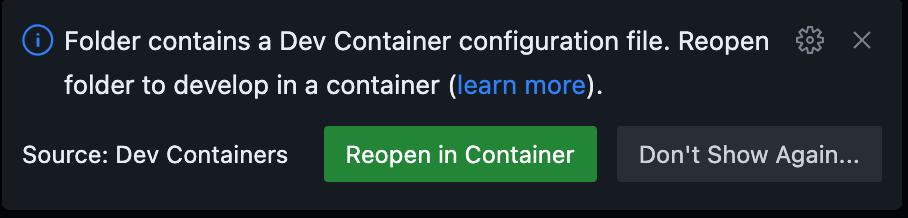

3. Instantiation types
Choose the option that best fits your needs! 🚀
The Dynatrace Enablement Framework supports multiple ways to instantiate your development environment, making it flexible for any workflow or platform.
🏃🏻♂️ How to run in...#
☁️ GitHub Codespaces#
 In the repository hosted in github, click on the <> Code button. Create a new codespace using the main branch or click + New with options to customize how and where to run the Codespace within Github Cloud.
In the repository hosted in github, click on the <> Code button. Create a new codespace using the main branch or click + New with options to customize how and where to run the Codespace within Github Cloud. - Secrets (
DT_TENANT,DT_OPERATOR_TOKEN,DT_INGEST_TOKEN) are injected automatically using GitHub Codespaces secrets. - No manual setup required—these are available as environment variables inside the container.
Protip: Run in any cloud ☁️ provider
For VS Code Dev Containers and Local Container you'll need to provide the infrastructure. You can run the enablements in any cloud provider of your choice.
🖥️ VS Code Dev Containers#
- Clone the repository to your local machine (Ubuntu OS recommended for best compatibility).
- Add a .env file and and adapt the
devcontainer.jsonto read the secrets from the environment and not from the secrets section. - In this framework, secrets are passed as environment variables using
runArgsin.devcontainer/devcontainer.json:"runArgs": ["--init", "--privileged", "--network=host", "--env-file", ".devcontainer/runlocal/.env"] - This ensures all variables in
.devcontainer/runlocal/.envare available inside the container. - Open the folder in VS Code and use the Dev Containers extension to "Reopen in Container". VS Code will use the
.devcontainer/devcontainer.jsondefinition to build and start the environment for you. - You can rebuild the container at any time by typing
[CTRL] + Shift P > Dev Containers: Rebuild and reopen in container
🐳 Local Container#
- Clone the repository to your local machine (Ubuntu OS recommended for best compatibility).
- Open a terminal in the
.devcontainerfolder and run:make start - This will build and launch the container, or attach to it if already running. All ports, volumes, and environment variables are set up automatically.
- Secrets and environment variables are loaded from
.devcontainer/runlocal/.env. - The devcontainer.json file is not used with this set-up. Arguments, volume mounts, port-forwarding is handled in the
makefile.sh - The
makefile.shscript passes the variables to Docker at runtime. - For more details, see the Local Container Details section below.
Instantiation Types#
☁️ GitHub Codespaces#
- One-click cloud dev environments
- No local setup required—just click
- Learn more about Codespaces

🖥️ VS Code Dev Containers#
- Use the Dev Containers extension for a seamless local experience in VS Code
- All configuration is in
.devcontainer/devcontainer.json - Supports secrets, port forwarding, and post-create hooks
🐳 Local Container#
- Run the same environment on your machine using Docker.
- Easiest way: just run
make startin the.devcontainerfolder. - This will build and launch the container if needed, or attach to it if already running.
- All ports, volumes, and environment variables are set up for you automatically.
See Local Container Details below for a full explanation of how this works.
⚡ Quick Comparison#
| Type | Runs On | VS Code Needed | Fast Start | Customizable | Secrets Handling | Port Forwarding | Best For |
|---|---|---|---|---|---|---|---|
| ☁️ Codespaces | GitHub Cloud | ❌ | ✅ | ❌ | Auto-injected | Auto | Quick onboarding, demos |
| 🖥️ VS Code DevContainer | Provided Infrastructure | ✅ | ✅ | ✅ | Auto/manual | Auto | Full-featured local dev |
| 🐳 Local Container | Provided Infrastructure | ❌ | ✅ | ✅ | Manual/.env |
Manual/Makefile | Reproducible local dev |
🔐 Secrets & Environment#
Secrets and environment variables are handled differently depending on the instantiation type:
| Instantiation Type | How Secrets Are Provided | Where to Configure/Set | Notes |
|---|---|---|---|
| ☁️ Codespaces | Auto-injected as environment variables from GitHub Codespaces secrets | GitHub repository > Codespaces secrets | No manual setup; secrets available at container start |
| 🖥️ VS Code Dev Containers | Passed as environment variables via runArgs and .env file |
.devcontainer/devcontainer.json, .devcontainer/runlocal/.env |
Edit/add .devcontainer/runlocal/.env for local secrets; runArgs must include --env-file |
| 🐳 Local Container | Loaded from .devcontainer/runlocal/.env file and passed to Docker at runtime by makefile.sh |
.devcontainer/runlocal/.env, makefile.sh |
Run make start in .devcontainer; secrets loaded at container start |
Example: runlocal/.env file#
# Environment variables
# Mapping of the Secrets defined in the .devcontainer.json file
# Dynatrace Tenant
DT_TENANT=https://abc123.live.dynatrace.com
#Description: eg. abc123 for live -> https://abc123.live.dynatrace.com or sprint -> https://abc123.sprint.dynatracelabs.com no apps in the URL
# Dynatrace Operator Token
DT_OPERATOR_TOKEN=dt0c01.XXXXXX
#it will be created automatically when adding a new Cluster over the UI. It contains the following permissions: 'Create ActiveGate tokens' 'Read entities' 'Read settings' 'Write settings' 'Access probrem and event feed, metrics and topology' 'PaaS Integration - installer download
#Dynatrace Ingest Token
DT_INGEST_TOKEN=dt0c01.YYYYYY
# it will be created automatically when adding a new Cluster over the UI. It contains the following permissions: 'Ingest logs' 'Ingest metrics' 'Ingest OpenTelemetry traces'
# Add any other environment variables as needed
Local Container Details#
The make start command is the recommended way to launch your local development container. Here’s what happens under the hood:
- The
Makefiledefines astarttarget, which sourcesmakefile.shand calls thestartfunction. - The
startfunction:- Checks if the container (
dt-enablement) is running:- If running, attaches a new shell to it.
- If stopped, removes and recreates the container.
- If the image is missing, builds it and then runs the container.
- All required ports, volumes, and environment variables are set up automatically.
- The container is started with the correct working directory and post-create/start scripts, just like in Codespaces or Dev Containers.
- Checks if the container (
You can customize the image or container behavior by editing .devcontainer/Makefile and .devcontainer/makefile.sh.
- Secrets like
DT_TENANT,DT_OPERATOR_TOKEN, andDT_INGEST_TOKENare injected automatically in Codespaces and can be set via.envfor local runs. - See
.devcontainer/devcontainer.jsonfor details.